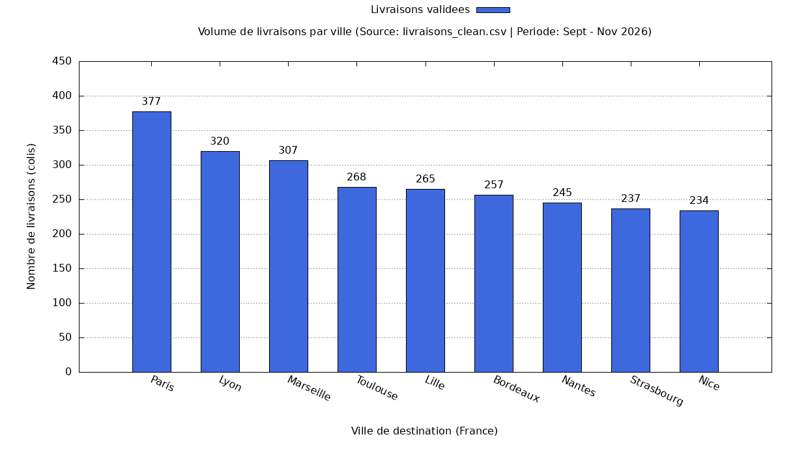
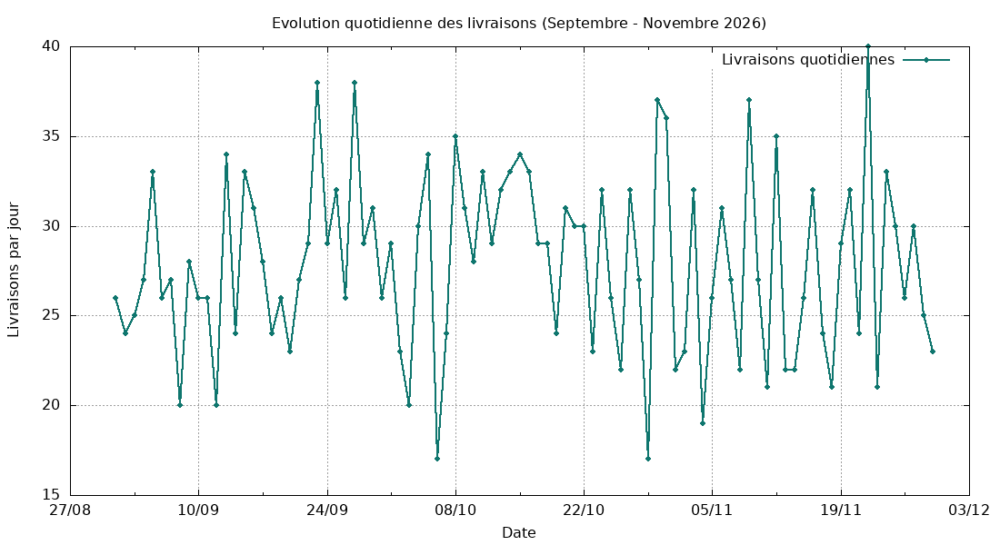
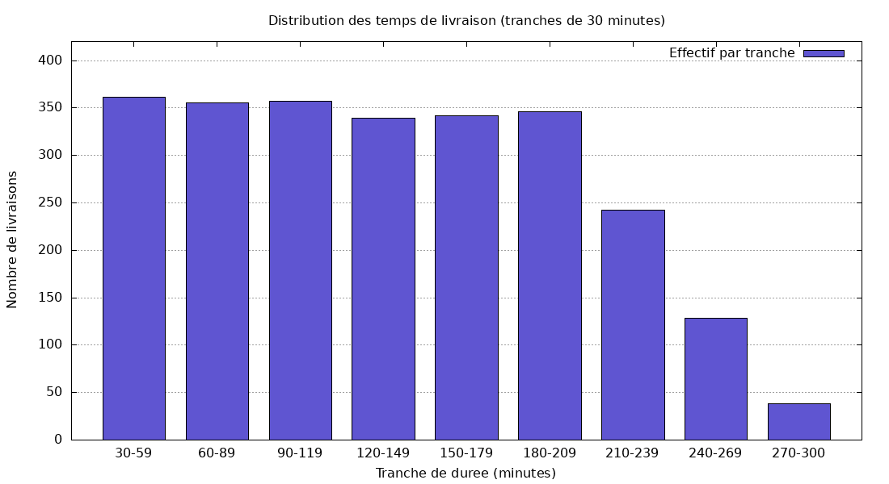
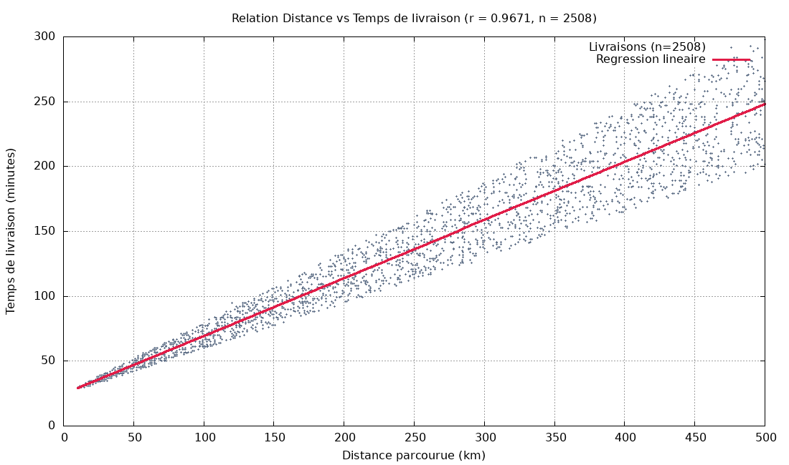
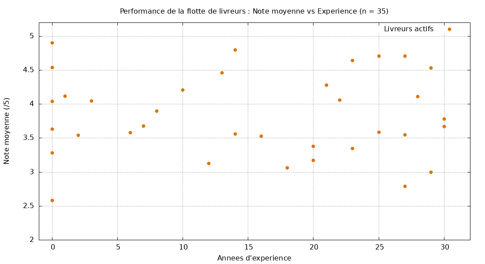
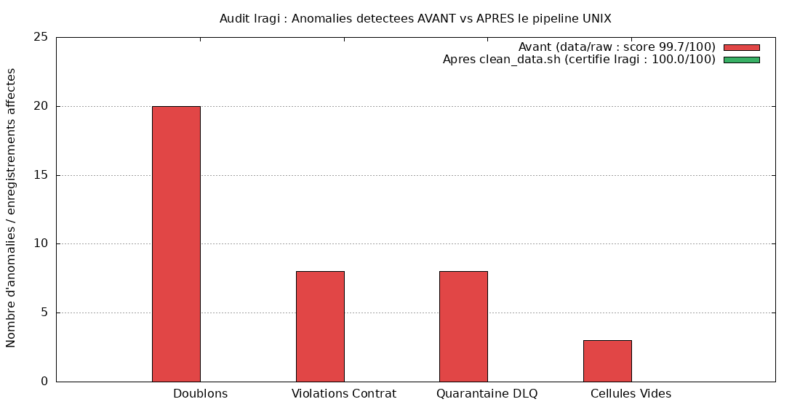
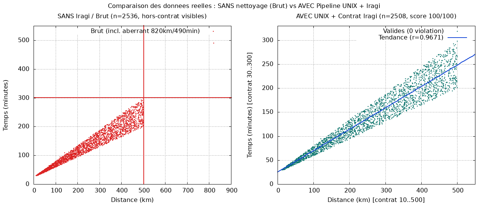

Projet Final Systemes UNIX — M1 Informatique
Analyse Logistique par Pipelines UNIX & Audit Iragi (0.6.4)
Genere le : 2026-11-26 15:32:09 UTC
Score Iragi Avant -> Apres
99.7 -> 100.0 / 100
Gain certifie : +0.3 pt (0 violation restante)
Livraisons Valides
2508 / 2536
20 doublons supprimes, 8 en quarantaine DLQ
Correlation Distance / Temps
r = 0.9671
Poids vs Temps : r = -0.0036
Reconciliation Logs HTTP
825 rapprochees
81 appels 404 orphelins detectes







Synthese par Ville de Destination
| Ville | Volume | Distance moy. | Duree moy. | Taux de retard |
|---|---|---|---|---|
| Lyon | 307 | 259.15 km | 141.73 min | 11.07 % |
| Nantes | 302 | 244.87 km | 135.86 min | 6.29 % |
| Lille | 292 | 273.98 km | 146.73 min | 15.41 % |
| Toulouse | 291 | 254.38 km | 138.19 min | 12.03 % |
| Marseille | 290 | 236.68 km | 129.21 min | 12.76 % |
| Bordeaux | 267 | 250.51 km | 135.24 min | 9.36 % |
| Strasbourg | 255 | 255.25 km | 140.26 min | 10.20 % |
| Paris | 254 | 253.54 km | 137.93 min | 12.60 % |
| Nice | 250 | 246.98 km | 134.04 min | 14.00 % |